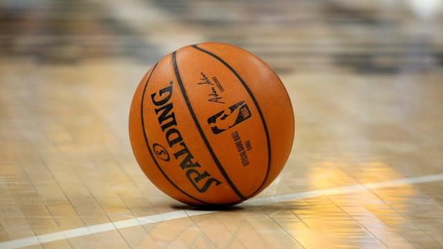

One of my many passions is cooking, as I take great pride in my ability to cook tasty, nutritious meals for myself, my friends, and my family on any given day. My interest in cooking began in middle school, as I was fairly overweight as a child and was trying to find any way possible to cut some calories and shed a few extra pounds. It started off by just making food with less oil and butter than I previously thought was neccessary, but it then turned into a journey where I got excited by new recipes and I found myself enthralled in the process of cooking. I started watching television shows such as "Chopped" and began to do more research on the art of cooking. As a Junior in college, I have continued to cook (albiet on a college budget) and have continued to experiement in the kitchen.
I played AAU basketball with a group of my close friends throughout my Senior year of High School, with the season culminating in our team winning the championship. As the starting power forward, I learned how to play within an offensive scheme where I may not be getting the ball too often, but I am still doing the little things, such as setting off-ball screens and making cuts, that helped my team win. This experience taught me the value of teamwork and making the proper sacrifices in order to succeed as one unit. In my free time, I enjoy playing pickup basketball and simply shooting around on an empty court.
